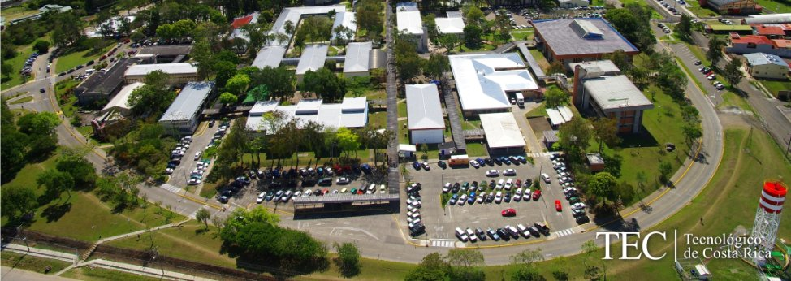

Acerca del Tecnologico de Costa Rica

El Tecnológico de Costa Rica (TEC) es una institución
nacional autónoma de educación superior universitaria,
dedicada a la docencia, la investigación y la extensión
de la tecnología y ciencias conexas para el desarrollo
de Costa Rica. Fue creado mediante ley No. 4777 del
10 de junio de 1971.
Mision
"Contribuir al desarrollo integral del país, mediante formación del recurso humano, la investigación y la extensión; manteniendo el liderazgo científico, tecnológico y técnico, la excelencia académica y el estricto apego a las normas éticas, humanísticas y ambientales, desde una perspectiva universitaria estatal de calidad y competitividad a nivel nacional e internacional."
Es importante rescatar que dicha misión tiene armonía con el artículo 1 y 3 de la Ley Orgánica por lo que “este lineamiento está basado en la definición sin sobrepasar, sino la aclara, enriquece y la actualiza”.
Vision
"El Tecnológico de Costa Rica será una Institución de reconocido prestigio nacional e internacional, que contribuirá decididamente a la edificación de una sociedad más solidaria, incluyente, respetuosa de los derechos humanos y del ambiente, mediante la sólida formación de recurso humano, la promoción de la investigación e innovación tecnológica, la iniciativa emprendedora y la estrecha vinculación con los sectores sociales y productivos.
Campus
El Campus Central abrió sus puertas a los primeros estudiantes en marzo de 1973 y se encuentra en la ciudad de Cartago, asentada en las faldas del Volcán Irazú. Contamos también con la Sede Regional de Santa Clara de San Carlos, desde 1975, así como con el Centro Académico de San José, desde 1978, y el Centro de Transferencia Tecnológica, desde 1994, como recintos metropolitanos.
Más de 90 hectáreas de terreno y 105 000 metros cuadrados de construcción albergan las aulas, laboratorios, centros de investigación, instalaciones deportivas y culturales, auditorios, oficinas, sodas, comedores, bibliotecas, bosques y parcelas experimentales, talleres y librerías que el TEC pone a disposición de sus estudiantes, funcionarios y comunidades
circunvecinas. No dejamos de lado el Taller Psicopedagógico dirigido a la formación preescolar de hijos de funcionarios y estudiantes.
Las zonas ajardinadas y verdes del Campus Central, muy concurridas por la comunidad no solo por su gran belleza, sino por el ambiente natural que estas transmiten, contienen más de 70 especies forestales distintas entre árboles y arbustos representativos del Valle Central.
Entre la vegetación arbórea se tiene el ciprés, la casuarina, el fresno, el eucalipto, el higuerón, la tirrá y el lorito, entre otras, que se convierten en el refugio de avifauna de la región, predominando especies de aves nativas y migratorias.
Mención aparte reclaman otras especies de la fauna costarricense que visitan nuestro Campus que son de fácil observación en el cotidiano, como las ardillas y conejos, así como un sinnúmero de mariposas que le dan una belleza inigualable al campus. No dejamos de lado el lago que embellece la parte sur del campus, así como las instalaciones creadas para albergar a todos aquellos que disfrutan de hacer deporte en medio de la naturaleza.
Historia
La necesidad de un Instituto Tecnológico se empezó a construir en la administración del profesor don José Joaquín Trejos Fernández, entre 1966 y 1970, un debate público que discutía la competitividad de Costa Rica en los aspectos tecnológicos necesarios para alcanzar el desarrollo del país ya se hacía latente
Los diputados Fernando Guzmán Mata y Jorge Luis Villanueva presentaron a consideración de la Asamblea Legislativa un proyecto de ley para crear en Cartago un Instituto Tecnológico Nacional.
Los cartagineses pronto se dieron cuenta de la importancia que tenía el establecimiento de una universidad en su territorio; por lo tanto, desde esa fecha fue en aumento la dedicación para alcanzar este propósito.
La ciudadanía de la vieja metrópoli se unió para dar una batalla común en pro de este objetivo, por lo que el surgimiento de organizaciones cívicas cumplió una desprendida labor de promoción. Una de ellas fue el Comité Pro-Tecnológico, presidido por el insigne sacerdote y educador reverendo Isidro García; así mismo, la Unión Cartaginesa para el Desarrollo (UNICADE) se entregó a la tarea de preparar un plan que tituló Proyecto para el establecimiento del Instituto Tecnológico en la ciudad de Cartago.
Para el jueves 10 de junio de 1971 se celebró en Cartago toda una fiesta cívica que conmemoraba y que concluía una etapa: la firma de Ley de Creación del Instituto Tecnológico de Costa Rica bajo el consecutivo legislativo 4777.
Desde las dos de la tarde se efectuaron desfiles de colegios del cantón central de Cartago, con representaciones de estudiantes de Limón y de otros lugares de la vieja metrópoli.
Los desfiles culminaron frente al Gimnasio del Colegio San Luis Gonzaga, donde se llevó a cabo la firma de la ley.
A este acto asistió el Presidente de la República, José Figueres Ferrer, y miembros de su gabinete; el Presidente de la Asamblea Legislativa, Lic. Daniel Oduber; algunos diputados, magistrados de la Corte Suprema de Justicia, munícipes de Cartago e invitados especiales.
Fines y Principios
Formar profesionales en el campo tecnológico que aúnen al dominio de su disciplina, una clara conciencia del contexto socioeconómico, cultural y ambiental en que la tecnología se genera, transfiere y aplica, lo cual les permite participar en forma crítica y creativa en las actividades productivas nacionales.
Generar, adaptar e incorporar en forma sistemática y continua, la tecnología necesaria para utilizar y transformar provechosamente para el país los recursos y fuerzas productivas.
Contribuir al mejoramiento de la calidad de vida del pueblo costarricense mediante la proyección de sus actividades a la atención y solución de los problemas prioritarios del país, a fin de editar una sociedad más justa.
Estimular la superación de la comunidad costarricense mediante el patrocinio y el desarrollo de programas culturales.
La búsqueda de la excelencia en el desarrollo de todas sus actividades.
La vinculación permanente con la realidad costarricense como medio de orientar sus políticas y acciones a las necesidades del país.
El derecho exclusivo de la comunidad institucional, constituida por profesores (as), estudiantes y funcionarios (as) administrativos, de darse su propio gobierno y de ejercerlo democráticamente, tanto para el establecimiento de sus órganos de deliberación y dirección, como para la determinación de sus políticas.
La plena capacidad jurídica del Instituto para adquirir derechos y contraer obligaciones, de conformidad con la Constitución Política y las leyes de Costa Rica.
La libertad de cátedra, entendida como el derecho de los profesores (as) de proponer los programas académicos y desarrollar los ya establecidos, de conformidad con sus propias convicciones filosóficas, científicas, políticas y religiosas
La libertad de expresión de las ideas filosóficas, científicas, políticas y religiosas de los miembros de la comunidad del Instituto dentro de un marco de respeto por las personas.
La igualdad de oportunidades para el ingreso y permanencia de los y las estudiantes en la Institución.
La evaluación permanente de los resultados de las labores de la Institución y de cada uno de sus integrantes.
La responsabilidad de los individuos y órganos del Instituto por las consecuencias de sus acciones y decisiones.
Valores
El III Congreso Institucional aprobó, como parte del modelo académico institucional, que el Instituto Tecnológico de Costa Rica considera como valores institucionales e individuales todos aquellos que surgen de la identidad institucional, del compromiso social y de las personas que la conforman. Se definieron los siguientes:
Ámbito Institucional
Compromiso con la democracia
Libertad de expresión
Igualdad de oportunidades
Autonomía institucional
Libertad de cátedra
Búsqueda de la excelencia
Planificación participativa
Cultura de trabajo en equipo
Comunicación efectiva
Evaluación permanente
Vinculación permanente con la sociedad
Compromiso con la protección del ambiente y la seguridad de las personas
Compromiso con el desarrollo humano
Rendición de cuentas
Ámbito Individual
Respeto por la vida
Libertad
Ética
Solidaridad
Responsabilidad
Honestidad
Sinceridad
Transparencia
Respeto por todas las personas
Cooperación
Integridad
Excelencia